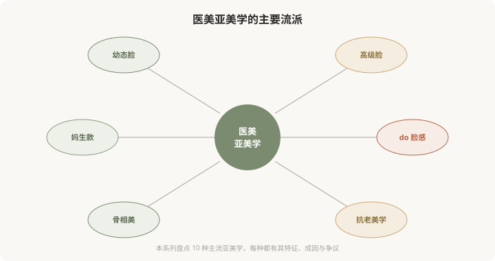
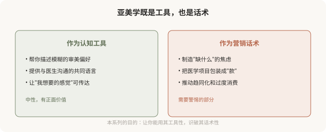

先说结论：医美行业存在一系列被命名、分类、推销的“亚美学”，幼态脸、高级脸、妈生款、do 脸感、骨相美、抗老美学等等。它们既是帮助人描述审美偏好的认知工具，也是机构用来激发欲望、引导消费的营销话术。理解这些亚美学如何形成、被谁推动、背后预设了什么，是消费者看清自己“为什么想做”的第一步。这个系列会用 10 篇盘点主要的医美亚美学，既客观介绍，也反思其文化机制。
什么是“医美亚美学”
“亚美学”（sub-aesthetics）指的是在“美”这个大概念之下，被进一步细分、命名、赋予特定特征的审美流派。就像音乐有古典、爵士、摇滚等亚类型，医美审美也被分成了诸多“款”“系”“脸”。

这些命名从哪来
医美亚美学的命名有几个来源：
- 社交媒体传播：小红书、抖音、微博上，用户和博主用简短标签描述审美偏好，“幼态脸”“高级脸”这类词迅速流行。
- 机构营销包装：机构把复杂的医学项目包装成易懂的“款”，降低决策门槛，“妈生款双眼皮”比“自然宽度重睑术”更好卖。
- 日韩审美输入：不少亚美学受日韩医美审美影响（如“童颜”“透明感”），再本土化。
- 明星效应：某些明星的脸成为某种亚美学的“代言人”，引发模仿潮。
这些命名不是中性的，它们在被创造出来的同时，也塑造着人们对“什么算美”的认知。
亚美学的双重性

同一个“幼态脸”，可以是“我喜欢这种圆润柔和的感觉”（工具），也可以是“你的脸不够幼态，需要做项目”（话术）。差别在于：它是帮你表达真实偏好，还是替你制造本来没有的欲望。
盘点这 10 篇要讲什么
接下来的 9 篇，会逐一盘点主要的医美亚美学，每篇结构类似：
- 特征：这种亚美学的视觉特征是什么。
- 成因：它为什么流行、被什么推动。
- 医学化：医美如何“实现”这种审美（哪些术式/注射）。
- 争议：它预设了什么、忽略了什么、可能带来什么问题。
- 反思：作为消费者如何清醒地看待它。
一个贯穿全系列的视角
没有哪种亚美学是“正确”的。幼态脸不比高级脸更对，妈生款不比 do 脸感更高雅。每种亚美学都是特定文化、商业、心理因素交织的产物。理解它们，不是为了选一个“对的”去追求，而是为了：
- 看清自己的欲望来源：我追求这个，是因为我真的喜欢，还是被种草？
- 识别营销话术：这个“款”是在描述我，还是在制造我的焦虑？
- 保留选择自由：知道有不同审美存在，才不会觉得“必须变成某种样子”。
- 减少不可逆后悔：冲着某种流行亚美学做了不可逆手术，潮水退去后可能后悔。
为什么把“反思”放进科普
有人可能觉得：科普就客观介绍医学知识就好，为什么要反思文化？原因在于，医美消费的决策，从来不只是医学决策，更是审美和心理决策。一个人决定做某个项目，背后几乎总有某种“亚美学”在驱动。如果不审视这个驱动，纯粹的医学科普反而可能被用来服务于盲目的审美追求。
所以这个系列的立场是“盘点 + 反思”：既尊重每个人追求美的权利，也帮助看清这种追求是如何被塑造的。这不反对医美，而是主张一种更清醒、更自主的医美消费。
给这个系列的读者
如果你正在考虑某个医美项目，希望这 10 篇能帮你：
- 分清“我喜欢的”和“被告诉该喜欢的”。
- 识别机构用亚美学包装的话术。
- 理解每种审美背后的预设和代价。
- 在充分知情下，做出真正属于自己的选择。
美是多元的，但只有当你看清了“多元”是如何被呈现给你的，你才能真正自由地选择属于自己的一种。
本文用于健康教育与文化反思，不构成对任何审美选择的否定；具体医美决策须结合个体情况与具备资质的医师面诊。